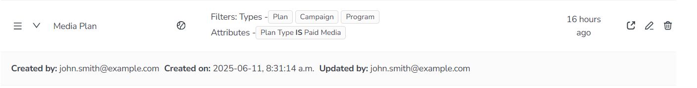
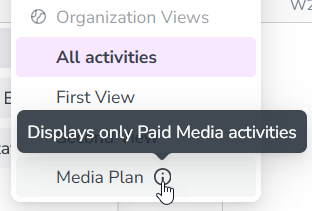

Administrators have access to additional tools for managing the Organization Views that are available to all users in your Uptempo instance.
Manage Organization Views in your Uptempo instance
As an administrator, you can see a list of all Organization Views that you and other administrators have created in your Uptempo instance. Using this list, you can review metadata about each view, and details about the specific filter and grouping configurations saved to the view.
In the Activities section, click Settings:
In the Activity Configuration menu, click Activities > Views. A list of all existing Organization Views is shown:
The list displays each view's name (and description, if present), associated display settings, and when it was last updated. On any view, click Expand to view more details, such as who created the view and when: 
Using the list of all Organization Views in your Uptempo instance, you can edit the name or description of any existing view, as well as change the order in which the views are displayed in the Select View menu.
Change the name or description of an Organization View
From the list of Organization Views, you can quickly rename any existing view. You can also add (or change) any view's description text. Description text is displayed as a tooltip beside the view's name in the Select View menu, and is useful for explaining the intended purpose of a view:

In the list of Organization Views, find the view whose name or description you want to change.
On the row of the view you want to edit, click Edit View Name in the Action column. The Edit Saved View dialog opens.
Use the Name and Description fields to enter a new name or description text (or both).
To apply your changes, click OK.
You have changed the name or description of the view. Your changes will be reflected in the Select View menu with immediate effect.
Change the display order of Organization Views
By default, views are displayed in the Select View menu in alphabetical order. For Organization Views, you can modify the display order to list these views in any custom order of your choice.
The list of Organization Views shows the views in the order in which they are displayed in the Select View menu. In the list, find a view whose display position you want to change.
 Settings:
Settings: 

 Expand to view more details, such as who created the view and when:
Expand to view more details, such as who created the view and when:  Edit View Name in the Action column. The Edit Saved View dialog opens.
Edit View Name in the Action column. The Edit Saved View dialog opens. Menu Order handle to drag the view to the position where you want it to appear:
Menu Order handle to drag the view to the position where you want it to appear: